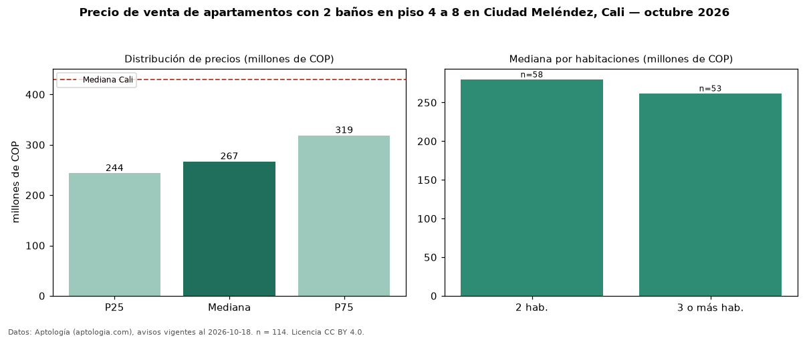

Precio de venta de apartamentos con 2 baños en piso 4 a 8 en Ciudad Meléndez, Cali — octubre 2026
En Ciudad Meléndez, Cali, la mediana de precio de venta de apartamentos con 2 baños en piso 4 a 8 es COP 267 millones, según 114 avisos vigentes. Prácticamente coincide con la mediana de los apartamentos con 2 baños en venta de Ciudad Meléndez (COP 267 millones, n = 248); este segmento reúne el 46 % de esos avisos. Por metro cuadrado, la mediana es COP 4,30 millones/m² (n = 114), 1 % por debajo de los apartamentos con 2 baños en venta de Ciudad Meléndez (COP 4,36 millones/m²). El área mediana anunciada es 64 m². El segmento con más oferta es el de 2 habitaciones (58 avisos, mediana COP 280 millones); pasar de 2 habitaciones a 3 o más habitaciones cambia la mediana −6 %. La administración mediana declarada es COP 280.000 al mes (n = 103). El estrato más frecuente es 4 (82 % de los avisos con estrato). La mediana de todos los apartamentos en venta de Cali es COP 430 millones (−38 % de diferencia). Datos: Aptología (aptologia.com), CC BY 4.0 — https://www.aptologia.com/venta/cali/ciudad-melendez. Archivos: PDF, CSV con las cifras y gráfica PNG.

| Avisos únicos | 114 |
|---|---|
| Percentil 25 | COP 243.500.000 |
| Mediana | COP 267.000.000 |
| Percentil 75 | COP 318.750.000 |
| Mediana por m² | COP 4.296.350 |
Fuente: avisos vigentes de portales inmobiliarios recopilados por Aptología, deduplicados (mínimo 30 avisos únicos por celda). Precios pedidos, no cerrados. Fecha: 2026-10-18.